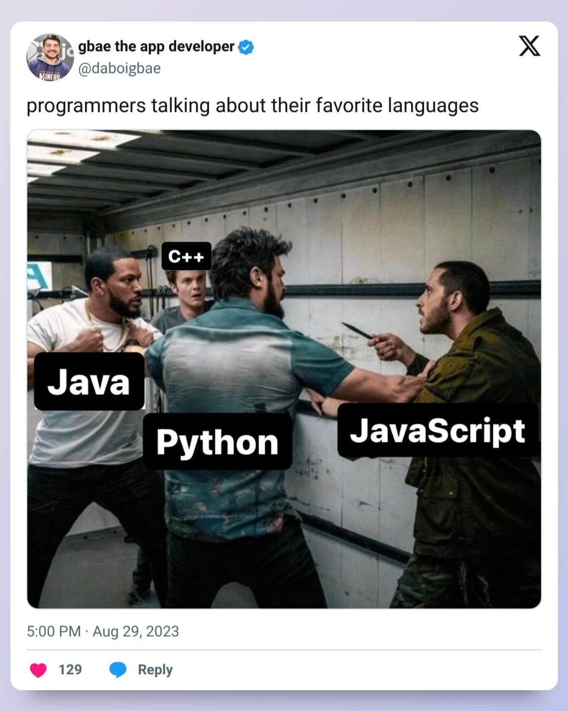

Grundlagen der Programmiersprache Java: Variablen, Datentypen & Operatoren
Variablen sind das Kurzzeitgedächtnis unseres Programms. In diesem Lernauftrag tauchen wir tief in das Speichermanagement von Java ein. Wir lernen, wie man Speicherplätze (Variablen) reserviert, warum Java so streng bei Datentypen ist (statische Typisierung) und wie man mit Operatoren Daten manipuliert.
byte (8 Bit) bis double (64 Bit): Alle elementaren Datentypen aus Kapitel 2.2 & 2.3 übersichtlich erklärt.
%) und Ternärer Operator (? :).

1. Typisierung & die 8 elementaren Datentypen in Java
F1 Was bedeutet statische und dynamische Typisierung in Bezug auf Programmiersprachen?
Programmiersprachen unterscheiden sich grundlegend darin, wann und wie streng geprüft wird, welchen Datentyp eine Variable besitzt:
Bei statisch typisierten Sprachen muss der Programmierer beim Anlegen jeder Variablen vorab festlegen, welchen Datentyp sie hat. Eine Variable ist wie eine fest beschriftete Aufbewahrungsbox: Steht außen int (Ganzzahl) drauf, passt dort während der gesamten Programmlaufzeit niemals ein Text (String) hinein.
- Zeitpunkt der Prüfung: Bereits zur Kompilierzeit (bevor das Programm überhaupt startet).
- Vorteil: Sehr hohe Typsicherheit, bessere Performance und Eclipse zeigt Tipp- oder Denkfehler sofort rot unterstrichen an.
Bei dynamisch typisierten Sprachen wird beim Erstellen einer Variablen kein Datentyp angegeben. Die Variable ist lediglich ein flexibles Namensschild (Referenz), das auf einen beliebigen Wert im Speicher zeigt. Sie kann in Zeile 1 eine Ganzzahl speichern und in Zeile 2 plötzlich einen Text.
- Zeitpunkt der Prüfung: Erst zur Laufzeit (während das Programm bereits beim Nutzer läuft).
- Vor-/Nachteil: Sehr schnelles Schreiben von kurzen Skripten, aber Typfehler führen oft erst mitten im Betrieb zum Programmabsturz.
// 1. JAVA (Statisch typisiert): Der Typ 'int' ist für immer fest an 'anzahl' gebunden
int anzahl = 42;
anzahl = "Zweiundvierzig"; // ❌ COMPILER-FEHLER: Type mismatch: cannot convert from String to int
# 2. PYTHON (Dynamisch typisiert): Die Variable wechselt ihren Typ zur Laufzeit problemlos
anzahl = 42 # Aktueller Typ im Hintergrund: int
anzahl = "Zweiundvierzig" # ✅ Erlaubt! Aktueller Typ ist jetzt: str
Der ewige Kampf der Programmiersprachen: Java vs. Python & Co. – wer gewinnt bei dir? 😂
F2 Welche 8 elementaren (primitiven) Datentypen gibt es in Java?
Java besitzt exakt 8 primitive (elementare) Datentypen. Sie heißen „primitiv“, weil sie keine komplexen Objekte sind, sondern ihren Wert direkt als rohe Bits im Arbeitsspeicher (Stack) ablegen. Man erkennt sie sofort daran, dass ihre Namen komplett kleingeschrieben werden. Sie teilen sich in vier Gruppen auf:
int und double) sind die Standardtypen für Zahlen in Java.
| Datentyp | Speicherbedarf | Wertebereich / Inhalt | Praktische Verwendung & Code-Beispiel |
|---|---|---|---|
| byte | 8 Bit (1 Byte) | -128 bis +127 | Kleinste Ganzzahl. Wird genutzt, um Rohdatenströme (z. B. beim Einlesen von Bilddateien oder Netzwerkpaketen) speichersparend in Arrays zu verarbeiten. Beispiel: byte level = 12; |
| short | 16 Bit (2 Byte) | -32.768 bis +32.767 | Kleine Ganzzahl. Wurde früher zum Sparen von Arbeitsspeicher genutzt, ist auf modernen 64-Bit-Rechnern im Alltag aber fast vollständig durch int abgelöst. Beispiel: short jahr = 2026; |
| int | 32 Bit (4 Byte) | -2.147.483.648 bis +2.147.483.647 (ca. ± 2,14 Milliarden) |
Der Standard-Datentyp für ganze Zahlen. Wird für Schleifenzähler, Mengen, Punkte, IDs und alltägliche Berechnungen verwendet. Beispiel: int einwohner = 84000000; |
| long | 64 Bit (8 Byte) | ± 9,22 Trillionen ($-2^{63}$ bis $2^{63}-1$) | Für extrem große Ganzzahlen, die den Rahmen von int sprengen (z. B. Weltbevölkerung, Datenbank-Primärschlüssel oder Zeitstempel in Millisekunden). Wichtig: Zahlenwert muss mit einem L am Ende markiert werden: long welt = 8100000000L; |
| float | 32 Bit (4 Byte) | Gleitkommazahl (einfache Genauigkeit, ca. 6–7 signifikante Stellen) | Für Kommazahlen mit geringeren Genauigkeitsansprüchen (z. B. 3D-Koordinaten in Game-Engines). Wichtig: Muss zwingend ein f am Ende tragen: float xPos = 14.5f; |
| double | 64 Bit (8 Byte) | Gleitkommazahl (doppelte Genauigkeit, ca. 15 signifikante Stellen) | Der Standard-Datentyp für Kommazahlen in Java. Jede Dezimalzahl mit Punkt (wie 3.14) wird von Java automatisch als double behandelt. Beispiel: double preis = 19.99; |
| char | 16 Bit (2 Byte) | 0 bis 65.535 (1 einzelnes Unicode-/UTF-16-Zeichen) | Speichert exakt ein einzelnes Schriftzeichen (Buchstabe, Ziffer, Sonderzeichen). Steht immer in einfachen Hochkommata: char note = 'A'; |
| boolean | 1 Bit (logisch) (intern meist 1 Byte) |
true oder false | Speichert einen logischen Wahrheitswert (Ja/Nein). Unverzichtbar für if-Verzweigungen und while-Schleifen. Beispiel: boolean istEingeloggt = true; |
String in dieser Liste?
String (für ganze Texte wie "Hallo Welt") wird mit einem Großbuchstaben geschrieben und ist kein primitiver Datentyp, sondern eine komplexe Klasse (Referenztyp)! Ein String besteht intern aus einer Kette vieler einzelner char-Werte und bringt eigene Methoden (wie .length() oder .toUpperCase()) mit.
2. Variablen-Lebenszyklus & Typumwandlung (Casting)
F3 Was bedeutet Deklaration von Variablen und Initialisieren von Variablen?
Bevor du mit einer Variablen rechnen oder sie ausgeben kannst, durchläuft sie im Quellcode zwei Schritte (die man getrennt oder in einer einzigen Zeile kombiniert schreiben kann):
Bei der Deklaration teilst du dem Java-Compiler mit, dass eine neue Variable existieren soll. Du legst ihren Datentyp und ihren Bezeichner (Namen) fest. Der Computer reserviert daraufhin genau die passende Menge Platz im Arbeitsspeicher (bei int z. B. 32 Bit).
int punktestand; // Nur deklariert (noch ohne Wert)
Unter der Initialisierung versteht man das allererste Zuweisen eines konkreten Startwertes an eine deklarierte Variable mithilfe des Zuweisungsoperator (=). In Java dürfen lokale Variablen erst gelesen werden, nachdem sie initialisiert wurden!
punktestand = 100; // Initialisierung
int leben = 3; // Deklaration + Initialisierung kombiniert!
F4 Implizite & explizite Typumwandlung – Wie wird der Cast-Operator angewendet?
In der Praxis muss man häufig Werte eines Datentyps in einen anderen Datentyp überführen (z. B. wenn man eine Ganzzahl mit einer Kommazahl verrechnet oder eine Kommazahl auf einen glatten Pixelwert kürzen will). Diesen Vorgang nennt man Type Casting (Typumwandlung).
(typ) nutzen.
Speicherst du einen Wert aus einem „kleineren“ Datentyp (z. B. int) in einer Variablen eines „größeren“ Datentyps (z. B. double), übernimmt Java die Umwandlung vollautomatisch im Hintergrund. Da eine 32-Bit-Ganzzahl problemlos in einen 64-Bit-Gleitkommaspeicher passt, geht keinerlei Information verloren (aus 42 wird einfach 42.0).
Willst du einen „größeren“ Datentyp (z. B. double) in einen „kleineren“ Typ (z. B. int) pressen, weigert sich der Compiler zunächst, weil Nachkommastellen verloren gehen. Du musst die Umwandlung ausdrücklich befehlen, indem du den gewünschten Zieltyp in runden Klammern vor den Wert schreibst: (int) meinDouble. Wichtig: Dabei wird nicht kaufmännisch gerundet, sondern alles hinter dem Komma radikal abgeschnitten!
// A) IMPLIZITE TYPUMWANDLUNG (int -> double): Funktioniert automatisch
int glatteZahl = 25;
double kommaZahl = glatteZahl; // Java macht daraus automatisch 25.0
// B) EXPLIZITE TYPUMWANDLUNG (double -> int): Erfordert den Cast-Operator (int)
double nettoPreis = 19.95;
int glatterEuro = (int) nettoPreis; // Cast-Operator (int) schneidet .95 ab -> Ergebnis: 19
System.out.println("Nach dem Cast: " + glatterEuro); // Gibt 19 aus!3. Operatoren in Java (Arithmetisch, Relational, Logisch, Ternär)
F5 Detaillierte Übersicht aller Operatoren-Familien in Java
Operatoren sind spezielle Symbole in Java, die einen, zwei oder drei Werte (sogenannte Operanden) verarbeiten und daraus ein neues Ergebnis berechnen. Je nachdem, wie viele Operanden ein Operator benötigt, spricht man von unären (1 Operand, z. B. !aktiv oder i++), binären (2 Operanden, z. B. a + b) oder ternären Operatoren (3 Operanden, ? :). In der folgenden Tabelle ist jeder einzelne Operator detailliert aufgeschlüsselt:
| Operator | Bezeichnung | Genaue Funktionsweise & Besonderheiten | Code-Beispiel & Ergebnis |
|---|---|---|---|
| 🧮 1. Arithmetische Operatoren (Mathematische Berechnungen) | |||
| + | Addition (bzw. String-Verkettung) |
Addiert zwei Zahlenwerte. Besonderheit: Ist mindestens einer der Operanden ein Text (String), klebt das + beide Teile zu einem neuen Text zusammen (Konkatenation). |
10 + 5 → 15"Hi " + 5 → "Hi 5" |
| - | Subtraktion (bzw. negatives Vorzeichen) |
Zieht den rechten Operanden vom linken Operanden ab. Steht das Minus allein vor einer Zahl (z. B. -x), dreht es deren Vorzeichen um. |
20 - 8 → 125 - 10 → -5 |
| * | Multiplikation | Multipliziert zwei Zahlen miteinander. Es gilt wie in der Mathematik die Punkt-vor-Strich-Rechnung (* bindet stärker als + und -). |
6 * 7 → 422.5 * 4 → 10.0 |
| / | Division | Teilt den linken Wert durch den rechten. ⚠️ Wichtig: Sind beide Zahlen Ganzzahlen (z. B. int), führt Java eine Ganzzahldivision durch und schneidet Nachkommastellen ab! |
7 / 2 → 3 (int!)7.0 / 2 → 3.5 (double) |
| % | Modulo (Restwert-Division) |
Liefert den Rest, der bei einer ganzzahligen Division übrig bleibt (siehe ausführliche Erklärung in Aufgabe 6 unten). | 10 % 3 → 112 % 4 → 0 |
| ++ / -- | Inkrement / Dekrement (Ergänzung für Schleifen) |
Erhöht (++) oder verringert (--) den Wert einer Variablen direkt um exakt 1. Wird ständig in Zählschleifen genutzt. |
int i = 5;i++; → i ist jetzt 6 |
⚖️ 2. Relationale Operatoren (Vergleichsoperatoren – liefern immer true oder false)
|
|||
| == | Gleichheit (Equal to) |
Prüft, ob zwei primitive Werte exakt gleich sind. ⚠️ Häufigster Anfängerfehler: Niemals mit dem einfachen = (Zuweisung) verwechseln! |
5 == 5 → true5 == 8 → false |
| != | Ungleichheit (Not equal to) |
Prüft, ob sich zwei Werte voneinander unterscheiden. Liefert true, wenn die Werte nicht identisch sind. |
5 != 8 → true5 != 5 → false |
| > | Größer als | Prüft, ob der linke Wert echt größer ist als der rechte Wert (sind beide gleich groß, ist das Ergebnis false). |
10 > 3 → true10 > 10 → false |
| < | Kleiner als | Prüft, ob der linke Wert echt kleiner ist als der rechte Wert. | 3 < 10 → true10 < 3 → false |
| >= | Größer oder gleich | Prüft, ob der linke Wert größer oder zumindest genauso groß wie der rechte Wert ist (Mindestwert-Prüfung, z. B. ab 18 Jahren). | 18 >= 18 → true17 >= 18 → false |
| <= | Kleiner oder gleich | Prüft, ob der linke Wert kleiner oder gleich dem rechten Wert ist (Höchstwert-Prüfung). | 50 <= 50 → true51 <= 50 → false |
🔗 3a. Logische Operatoren (Verknüpfung von boolean-Bedingungen)
|
|||
| && | Logisches UND (Short-Circuit AND) |
Liefert nur dann true, wenn beide Bedingungen gleichzeitig wahr sind. Kurzschluss-Effekt: Ist schon die linke Seite false, bricht Java sofort ab und prüft die rechte Seite gar nicht mehr! |
true && true → truetrue && false → false |
| || | Logisches ODER (Short-Circuit OR) |
Liefert true, sobald mindestens eine der beiden Seiten wahr ist (oder beide). Kurzschluss-Effekt: Ist bereits die linke Seite true, wird die rechte Seite übersprungen. |
false || true → truefalse || false → false |
| ! | Logisches NICHT (Negation / NOT) |
Ein unärer Operator: Er kehrt einen Wahrheitswert genau ins Gegenteil um. Aus true wird false und aus false wird true. |
!true → false!(5 > 10) → true |
| ^ | Exklusives ODER (XOR – „Entweder-Oder“) |
Liefert nur dann true, wenn die beiden Operanden unterschiedliche Wahrheitswerte haben (genau einer ist true, der andere false). Sind beide gleich, kommt false heraus! |
true ^ false → truetrue ^ true → false |
🧬 3b. Bitweise logische Operatoren (& und | einzeln geschrieben)
|
|||
| & | Bitweises UND (bzw. logisches UND ohne Kurzschluss) |
1. Bei Booleans: Prüft wie &&, ob beide Seiten wahr sind, wertet aber immer zwingend beide Seiten aus (kein Abbruch nach links).2. Bei Ganzzahlen: Vergleicht die Binärdarstellung zweier Zahlen Bit für Bit (nur 1 & 1 ergibt 1).
|
Binär: 5 & 30101 & 0011→ 0001 (1) |
| | | Bitweises ODER (bzw. logisches ODER ohne Kurzschluss) |
1. Bei Booleans: Prüft wie ||, ob mindestens eine Seite wahr ist, führt aber ebenfalls immer beide Seiten aus.2. Bei Ganzzahlen: Setzt jedes Bit im Ergebnis auf 1, sobald in einer der beiden Zahlen an dieser Stelle eine 1 steht.
|
Binär: 5 | 30101 | 0011→ 0111 (7) |
| 📥 4. Zuweisungsoperatoren (Werte speichern & direkt verrechnen) | |||
| = | Einfache Zuweisung | Berechnet zuerst den kompletten Ausdruck auf der rechten Seite und speichert das Ergebnis anschließend in der Variablen auf der linken Seite. | int x = 10; |
| += | Additions-Zuweisung | Addiert den rechten Wert zum bisherigen Wert der Variablen hinzu und speichert das neue Ergebnis sofort wieder in ihr ab (Kurzform für x = x + y). |
int x = 10;x += 5; → 15 |
| -= | Subtraktions-Zuweisung | Zieht den rechten Wert vom aktuellen Variablenwert ab und überschreibt die Variable mit dem Ergebnis (Kurzform für x = x - y). |
int x = 10;x -= 3; → 7 |
| *= | Multiplikations-Zuweisung | Multipliziert den aktuellen Variablenwert mit dem rechten Wert und speichert das Ergebnis zurück in die Variable (Kurzform für x = x * y). |
int x = 10;x *= 4; → 40 |
| /= | Divisions-Zuweisung | Teilt den aktuellen Variablenwert durch den rechten Wert und speichert das Ergebnis zurück in die Variable (Kurzform für x = x / y). |
int x = 20;x /= 5; → 4 |
| %= | Modulo-Zuweisung | Berechnet den Divisionsrest von Variable und rechtem Wert und speichert diesen Rest in der Variablen (Kurzform für x = x % y). |
int x = 17;x %= 5; → 2 |
💡 Spickzettel für Klausuren: Wahrheitstabelle der logischen Operatoren
| Operand A | Operand B | A && B (UND) | A || B (ODER) | A ^ B (XOR) | !A (NICHT A) |
|---|---|---|---|---|---|
| false | false | false | false | false | true |
| false | true | false | true | true | true |
| true | false | false | true | true | false |
| true | true | true | true | false | false |
F6
Erläuterung & typische Anwendungsfälle des Modulo-Operators (%)
Der Modulo-Operator (%) teilt zwei Zahlen und gibt nicht das Ergebnis der Division zurück, sondern ausschließlich den ganzzahligen Rest, der bei der Division übrig bleibt (wie man es aus der Grundschule kennt: „17 geteilt durch 5 ist 3, Rest 2“ → 17 % 5 ergibt 2). Geht eine Division glatt auf, ist das Modulo-Ergebnis immer 0.
zahl % 2 == 0, bleibt beim Teilen durch 2 kein Rest – die Zahl ist also garantiert gerade. Ergibt zahl % 2 hingegen 1, ist sie ungerade.
jahr % 4 == 0 und jahr % 100 != 0, ob eine Jahreszahl ohne Rest durch 4 bzw. 100 teilbar ist.
135 Minuten in Stunden und Restminuten um: 135 / 60 = 2 volle Stunden und 135 % 60 = 15 verbleibende Restminuten!
F7
Verwendung des Ternären Operators (Konditionaloperator ? :)
Der Ternäre Operator (? :) heißt „ternär“ (dreiteilig), weil er der einzige Operator in Java ist, der genau drei Operanden verarbeitet. Er dient als elegante, einzeilige Kurzform für eine klassische if-else-Verzweigung, wenn man einer Variablen (oder direkt einer System.out.println()-Ausgabe) abhängig von einer Bedingung einen von zwei Werten zuweisen möchte.
Variable = (1. Bedingung) ? 2. WertWennTrue : 3. WertWennFalse;
public class OperatorenUndTernaerDemo {
public static void main(String[] args) {
// 1. Kombinierte Zuweisung & Modulo in Aktion:
int gesamtSekunden = 125;
gesamtSekunden += 10; // Erhöht auf 135 Sekunden
int minuten = gesamtSekunden / 60; // Ganzzahldivision: 135 / 60 = 2 Minuten
int restSek = gesamtSekunden % 60; // Modulo-Restwert: 135 % 60 = 15 Sekunden
// 2. Ternärer Operator (? :) statt 8 Zeilen if-else:
int punkte = 65;
String status = (punkte >= 50) ? "Bestanden!" : "Durchgefallen.";
// 3. Ternärer Operator kombiniert mit Modulo (Gerade/Ungerade):
String paritaet = (punkte % 2 == 0) ? "gerade Zahl" : "ungerade Zahl";
System.out.println("Dauer: " + minuten + " Min. und " + restSek + " Sek.");
System.out.println("Ergebnis: " + status + " (" + punkte + " ist eine " + paritaet + ")");
}
}4. Standards & Typische Stolperfallen im Umgang mit Datentypen
Warum double bei Geldbeträgen gefährlich sein kann
float und double speichern Zahlen intern nach dem internationalen Standard IEEE 754 als Binärbrüche. Manche Dezimalbrüche (wie 0.1) lassen sich binär nicht exakt abbilden: Rechnet man in Java 0.1 + 0.2, kommt oft 0.30000000000000004 heraus! In echter Finanz- oder Kassensoftware rechnet man deshalb entweder in glatten Cent-Beträgen (als int/long) oder nutzt die spezielle Java-Klasse BigDecimal.
Was passiert, wenn eine Zahl zu groß für ihren Datentyp wird?
Jeder primitive Datentyp hat eine feste Obergrenze. Addiert man zum maximalen int-Wert (+2.147.483.647) einfach + 1 hinzu, wirft Java keinen Fehler, sondern kippt durch das Zweierkomplement-System komplett ins Negative um (auf -2.147.483.648)! Diesen Effekt nennt man Integer Overflow (Überlauf) – ein Klassiker in IHK-Prüfungsfragen.
5. Fremdwörter- & Fachbegriffs-Lexikon (Variablen & Operatoren)
6. Literatur- & Quellenverzeichnis (Java)
Die Inhalte dieses Lernauftrags (LA_06_1) stützen sich auf die Kursunterlagen sowie auf die offiziellen Java-Tutorials:
| Thema / Format | Literatur / Autor | Bezug zur Ausbildung |
|---|---|---|
| 🔗 IHK-Wiki: Java Aufbau | Eigenes Dokument (Lernauftrag 05) | Die hier erklärten Datentypen, Variablen-Regeln und der Modulo-Operator bauen direkt auf LA 05 (Aufbau von Java Programmen & Schaltjahr-Prüfung) auf. |
| Kursunterlagen Kapitel 2 | Unterkapitel 2.2 & 2.3 (Elementare Datentypen 1 & 2, bis Seite 11) | Grundlagen der 8 primitiven Datentypen, Wertebereiche, Variablendeklaration und Typumwandlung. |
| Java Tutorial (Online) | Kapitel: Java Variables, Java Data Types, Java Type Casting, Java Operators | Praxisnahe Codebeispiele zum impliziten/expliziten Casting sowie zu allen Operatoren-Gruppen und dem Ternären Operator. |
| Buch Rheinwerk | Programmieren lernen mit Java & Openbook „Java ist auch eine Insel“ | Vertiefendes Nachschlagewerk zu IEEE-754-Gleitkommazahlen, Bit-Operatoren und Typsicherheit in Java. |